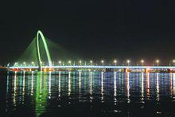

斜拉桥 斜拉桥又称斜张桥，是将主梁用许多拉索直接拉在桥塔上的一种桥梁，是由承压的塔、受拉的索和承弯的梁体组合起来的一种结构体系。其可看作是拉索代替支墩的多跨弹性支承连续梁。其可使梁体内弯矩减小，降低建筑高度，减轻了结构重量，节省了材料。斜拉桥由索塔、主梁、斜拉索组成。 1基本信息 简介 斜拉桥作为一种拉索体系，比梁式桥的跨越能力更大，是大跨度桥梁的最主要桥型。 如武汉长江二桥、白沙洲长江大桥均为钢筋混凝土双塔双索面斜拉桥。现代斜拉桥可以追溯到1956年瑞典建成的斯特伦松德桥，主跨182．6米。历经半个世纪，斜拉桥技术得到空前发展，世界上已建成的主跨在200米以上的斜拉桥有200余座，其中跨径大于400米的有40余座。尤其20世纪90年代后，世界上建成的著名斜拉桥有：法国诺曼底斜拉桥（主跨856米），南京长江二桥南汊桥钢箱梁斜拉桥（主跨628米），以及1999年日本建成的当时世界最大跨度的多多罗大桥（主跨890米）。 中国至今已建成各种类型的斜拉桥100多座，其中有52座跨径大于200米。20世纪80年代末，我国在总结加拿大安那西斯桥的经验基础上，1991年建成了上海南浦大桥（主跨为423米的结合梁斜拉桥），开创了中国修建400米以上大跨度斜拉桥的先河。我国已成为拥有斜拉桥最多的国家。[1] 建造历史 斜拉桥(cable stayed bridge)作为一种拉索体系，比梁式桥的跨越能力更大，是大跨度桥梁的最主要桥型。斜拉桥是由许多直接连接到塔上的钢缆吊起桥面，斜拉桥 由索塔、主梁、斜拉索组成。索塔型式有A型、倒Y型、H型、独柱，材料有钢和混凝土的。斜拉索布置有单索面、平行双索面、斜索面等。第一座现代斜拉桥是1955年德国DEMAG公司在瑞典修建的主跨为182.6米的斯特伦松德（Stromsund）桥。目前世界上建成的最大跨径的斜拉桥为俄罗斯的俄罗斯岛大桥，主跨径为1104米,于2012年7月完工。[2] 斜拉桥是将梁用若干根斜拉索拉在塔柱上的桥。它由梁、斜拉索和塔柱三部分组成。斜拉桥是一种自锚式体系，斜拉索的水平力由梁承受。梁除支承在墩台上外，还支承在由塔柱引出的斜拉索上。按梁所用的材料不同可分为钢斜拉桥、结合梁斜拉桥和混凝土梁斜拉桥。 构造原理 桥承受的主要荷载并非它上面的汽车或者火车，而是其自重，主要是主梁。以一个索塔为例，索塔的两侧是对称的斜拉索，通过斜拉索将索塔主梁连接在一起。假设索塔两侧只有两根斜拉索，左右对称各一条，这两根斜拉索受到主梁的重力作用，对索塔产生两个对称的沿着斜拉索方向的拉力，根据受力分析，左边的力可以分解为水平向向左的一个力和竖直向下的一个力；同样的右边的力可以分解为水平向右的一个力和竖直向下的一个力；由于这两个力是对称的，所以水平向左和水平向右的两个力互相抵消了， 最终主梁的重力成为对索塔的竖直向下的两个力，这样，力又传给索塔下面的桥墩了。 斜拉索数量再多，道理也是一样的。之所以要很多条，那是为了分散主梁给斜拉索的力而已。 建造规格 2013年已建成的斜拉桥有独塔、双塔和三塔式。以钢筋混凝土塔为主。塔型有H形、倒Y形、A形、钻石形等。 斜拉索仍以传统的平行镀锌钢丝、冷铸锚头为主。钢绞线斜拉索在汕头石大桥采用。钢绞线用于斜拉索，无疑使施工操作简单化，但外包PE的工艺还有待研究。 斜拉桥的钢索一般采用自锚体系。开始出现自锚和部分地锚相结合的斜拉桥，如西班牙的鲁纳（Luna）桥，主桥440m；我国湖北郧县桥，主跨414m。地锚体系把悬索桥的地锚特点融于斜拉桥中，可以使斜拉桥的跨径布置更能结合地形条件，灵活多样，节省费用。 斜拉桥的施工方法：混凝土斜拉桥主要采用悬臂浇筑和预制拼装；钢箱和混合梁斜位桥的钢箱采用正交异性板，工厂焊接成段，现场吊装架设。钢箱与钢箱的连接，一是螺栓，二是全焊，三是栓焊结合。 一般说，斜拉桥跨径300～1000m是合适的，在这一跨径范围，斜拉桥与悬索桥相比，斜拉桥有较明显优势。德国著名桥梁专家F.leonhardt认为，即使跨径1400m的斜拉桥也比同等跨径悬索桥的高强钢丝节省二分之一，其造价低30%左右。 斜拉桥发展趋势：跨径会超过1000m；结构类型多样化、轻型化；加强斜拉索防腐保护的研究；注意索力调整、施工观测与控制及斜拉桥动力问题的研究。 我国发展 斜拉桥是我国大跨径桥梁最流行的桥型之一。目前为止建成或正在施工的斜拉桥共有30余座，仅次于德国、日本，而居世界第三位。而大跨径混凝土斜拉桥的数量已居世界第一。 50年代中期，瑞典建成第一座现代斜拉桥，40多年来，斜拉桥的发展，具有强劲势头。我国70年代中期开始修建混凝土斜拉桥，改革开放后，我国修建斜拉桥的势头一直呈上升趋势。 我国一直以发展混凝土斜拉桥为主，近几年我国开始修建钢与混凝土的混合式斜拉桥，如汕头礐石大桥，主跨518m；武汉白沙洲长江大桥，主跨618m，武汉二七长江大桥为三塔斜拉桥，两个主跨均为616米 。钢箱斜拉桥如南京长江第二大桥南汊桥，主跨628m；武汉军山长江大桥，主跨460m。前几年上海建成的南浦（主跨423m）和杨浦（主跨602m）大桥为钢与混凝土的结合梁斜拉桥。武汉杨泗港长江大桥主跨将达1700米。 我国斜拉桥的主梁形式：混凝土以箱式、板式、边箱中板式；钢梁以正交异性极钢箱为主，也有边箱中板式。 2代表桥梁 世界上建成的著名斜拉桥有：俄罗斯岛大桥（主跨1104），苏通长江大桥（主跨1088m），以及1999年日本建成的世界最大跨度的多多罗大桥（主跨890米）。 我国至今已建成各种类型的斜拉桥100多座，其中有50余座跨径大于200米。开创了我国修建400米以上大跨度斜拉桥的先河。我国已成为拥有斜拉桥最多的国家，在世界10大著名斜拉桥排名榜上，中国有8座，尤其是苏通长江大桥主跨1088m，为世界斜拉桥第一跨。 2013年世界前10名大跨度斜拉桥 (截止2012年8月） 序号 桥名 国家 主跨（m） 建成年份 ,1 俄罗斯岛大桥 俄罗斯 1104 2012 2 苏通大桥 中国 1088 2008 3 香港昂船洲大桥 中国 1018 2008 4 鄂东长江大桥 中国 926 2010 5 多多罗大桥 日本 890 1999 6 诺曼底大桥 法国 856 1995 7 南京长江三桥南汊桥 中国 648 2005 8 南京长江二桥南汊桥 中国 628 2001 9 武汉白沙洲长江大桥 中国 620 2008 10 福州青洲闽江大桥 中国 618 2000 11 上海杨浦大桥 中国 605 2001 12 上海徐浦大桥 中国 602 1993 西安浐灞2号桥  西安浐灞河2号大桥为扁平流线型混合式钢箱斜拉桥，全长485米，桥梁宽度29.6米，双向6车道。主桥部分全长240米，为双索面拱形单斜塔斜拉桥，半漂浮体系。主跨为最大跨径145米的钢箱梁。桥塔为拱门式钢结构主，高78米，倾角75度，钢塔自重约1621吨，其重量在混合斜拉桥中居国内第一，是西安市的“地标”建筑。 晋江大桥塔 世界第一座“开”字形斜拉桥 2005年5月开工建设，经过三年多的施工，世界第一座“开”字形斜拉桥——泉州晋江大桥全线成功实现合龙（2008年4月30日），是泉州的“新地标”于2008年10月24日试通车。 它标志着大桥主体工程全部竣工。 泉州晋江大桥是省重点工程，是省道210线暨泉州沿海大通道上的关键项目，也是泉州迈向崭新泉州湾时代的重要交通基础设施。该工程由主桥和南北引桥及南北互通立交组成。大桥北端起点与市区泉秀东街相连，南岸连接晋江市、石狮市及沿海大通道。大桥全长2.74公里，跨越晋江，其中主桥长365米，桥宽38米，采用“开”字形独塔双索门式预应力混凝土斜拉桥结构，北引桥长1365米，南引桥长1010米；大桥南、北立交均采用八条匝道互通立交，北岸东海立交匝道全长5477米，南岸晋江江滨路立交匝道全长5260米，抗震设防为地震基本8度。工程概算总投资11亿元。 大桥主桥梁体为双波浪鱼腹式结构，具有线条流畅美观、抗台风能力强等特点。大桥主塔高134.125米，采用“开”字形钢筋混凝土结构。 泉州晋江大桥项目工程最终数据：总投资8.8亿元人民币，大桥全长3.6公里,宽度33米.其中主桥大桥(含主桥\引桥)总长2740米,主桥365米,北引桥长1365米,南引桥长1010米,北岸东海立交匝道全长5477米,南岸江滨路立交匝道长5260米,设计桥梁等级为一级公路特大桥,宽度33米,设计速为80公里/小时(匝道50公里/小时),保证通行安全.设计通航安全.设计标准为500吨级客货轮单孔双向通航.是泉州东海跨晋江通往晋江市、石狮市的主要桥梁。 苏 苏通大桥 1088米，中国，2008年 苏通大桥位于江苏省东部的南通市和苏州（常熟）市之间，是交通部规划的黑龙江嘉荫至福建南平国家重点干线公路跨越长江的重要通道，也是江苏省公路主骨架网“纵一”——赣榆至吴江高速公路的重要组成部分，是我国建桥史上工程规模最大、综合建设条件最复杂的特大型桥梁工程。建设苏通大桥对完善国家和江苏省干线公路网、促进区域均衡发展以及沿江整体开发，改善长江安全航运条件、缓解过江交通压力、保证航运安全等具有十分重要的意义。 苏通大桥工程起于通启高速公路的小海互通立交，终于苏嘉杭高速公路董浜互通立交。路线全长32.4公里，主要由北岸接线工程、跨江大桥工程和南岸接线工程三部分组成[3]。 杨浦大桥 602米，中国，1993年 杨浦大桥，是一座跨越黄浦江的自行设计、建造的双塔双索面迭合梁斜拉桥。杨浦大桥，于1991年4月29 日动工，1993年9月15日建成，历时仅2年5个月。总长为7654米，主桥长1172米、宽30.35米，共设6车道。602米长的主桥犹如一道横跨浦江的彩虹，在世界同类型斜拉桥中雄居第一。挺拔高耸的208米主塔似一把利剑直刺穹苍，塔的两侧32对钢索连接主梁，呈扇面展开，如巨型琴弦，正弹奏着巨龙腾飞的奏鸣曲。 杨浦大桥犹如一道横跨浦江的彩虹，高达208米的塔柱似利剑刺破青天，无数根排列整齐的斜拉钢索仿佛一架硕大无比的竖琴迎风弹奏。全桥设计精巧、造型优美、气势恢宏，犹如彩虹横跨浦江两岸，是上海旅游的著名景观。 杨浦大桥位于上海市杨浦区宁国路地区。桥址离苏州河5.3km，离吴淞口20.5km，与南浦大桥相距11km。该桥是市区内跨越黄浦江、连接浦西老市区与浦东开发区的重要桥梁，是上海市内环线的重要组成部分。 徐浦大桥 590米，中国，1997 年 徐浦大桥，是继南浦大桥、杨浦大桥之后，上海市区第3座跨越黄浦江的特大型桥梁，位于徐汇区华泾镇 和浦东新区三林镇附近的江面上，下游距南浦大桥10.2公里。大桥全长6.017公里，主桥长1.074公里，主跨590米，总宽35.95米，主塔高217米；设双向8车道，设计时速80公里；最大荷载为汽——超20级。 徐浦大桥西接朱梅路，东连新辟的杨高南路，纵贯东西，形成一条长10多公里的通街大道，为外环线西南段划上了第一条线。 它将和建成后的外环线一期工程连成一体，成为沪宁和沪杭高速公路进入上海的交通枢纽，也是今后虹桥国际机场和浦东国际机场之间最便捷的主要通道。 徐浦大桥首次全面采用国STE355钢板，代替进口桥梁钢板加工制作构件，推动了我国特种钢材冶炼和轧制水平的提高。 工程投资20亿元，1994年4月正式开工，1997年6月24日建成通车。